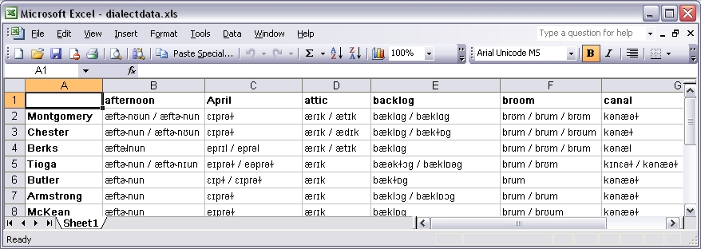
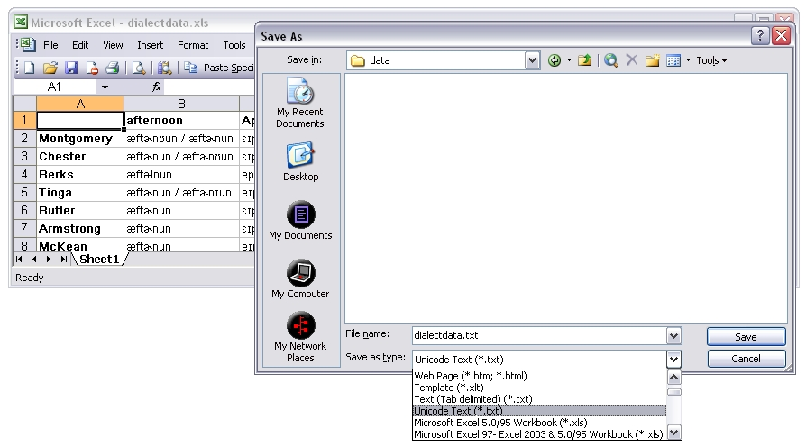

The data file can be created as a spreadsheet, using for example Microsoft Excel:
To save the file as a tab separated table, in Excel you choose "Save As" in the "File" menu, and in the drop-down-menu "Save as type:" the option is listed as "Unicode text (*.txt)". (Other programs have similar listings.) The resulting file with the extension .txt can be uploaded in Gabmap.
